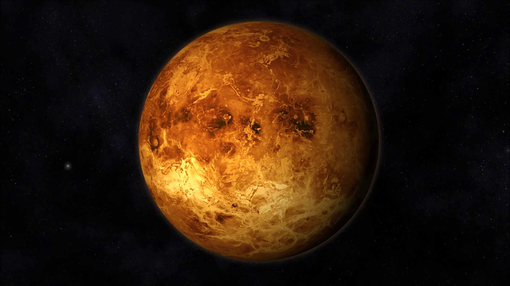

VENUS金星

金星（英語、拉丁語：Venus，天文符號：♀），在太陽系的八大行星中，是從太陽向外的第二顆行星，軌道公轉週期為224.7地球日，它沒有天然的衛星。 ... 然而，它在其它方面則明顯的與地球不同。 它有著四顆類地行星中最濃厚的大氣層，其中超過96%都是二氧化碳，金星表面的大氣壓力是地球的92倍。金星沒有將碳吸收進入岩石的碳循環，似乎也沒有任何有機生物來吸收生物量的碳。金星被一層高反射、不透明的硫酸雲覆蓋著，阻擋了來自太空中，可能抵達表面的可見光。它在過去可能擁有海洋，並且外觀與地球極為相似[7][8]，但是隨著失控的溫室效應導致溫度上升而全部蒸發掉了[9]。水最有可能因為缺乏行星磁場而受到光致蛻變分解成氫和氧，而自由氫一直被太陽風掃進星際空間 [10]。金星表面是乾燥的荒漠景觀，點綴著定期被火山刷新的岩石。
Back to home...